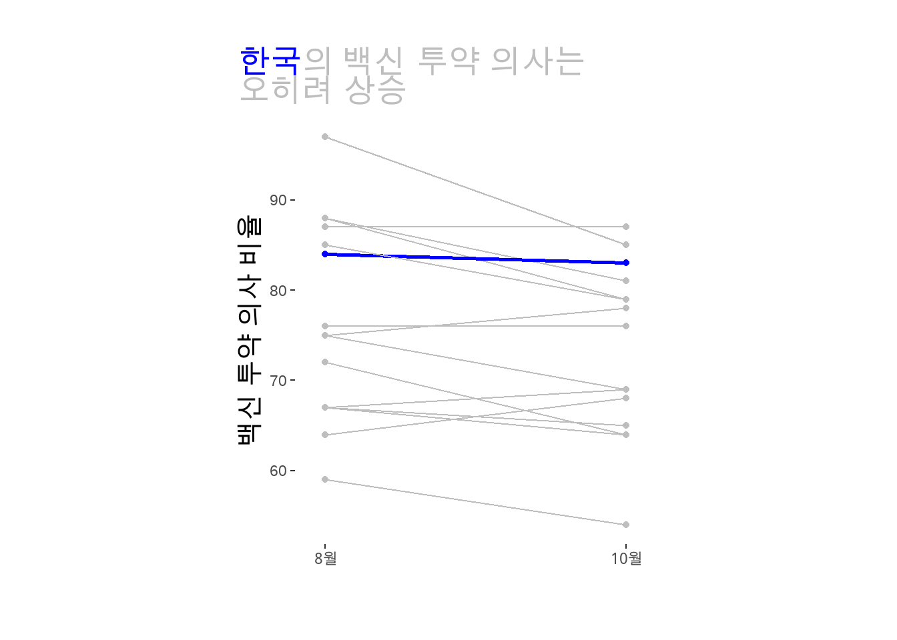
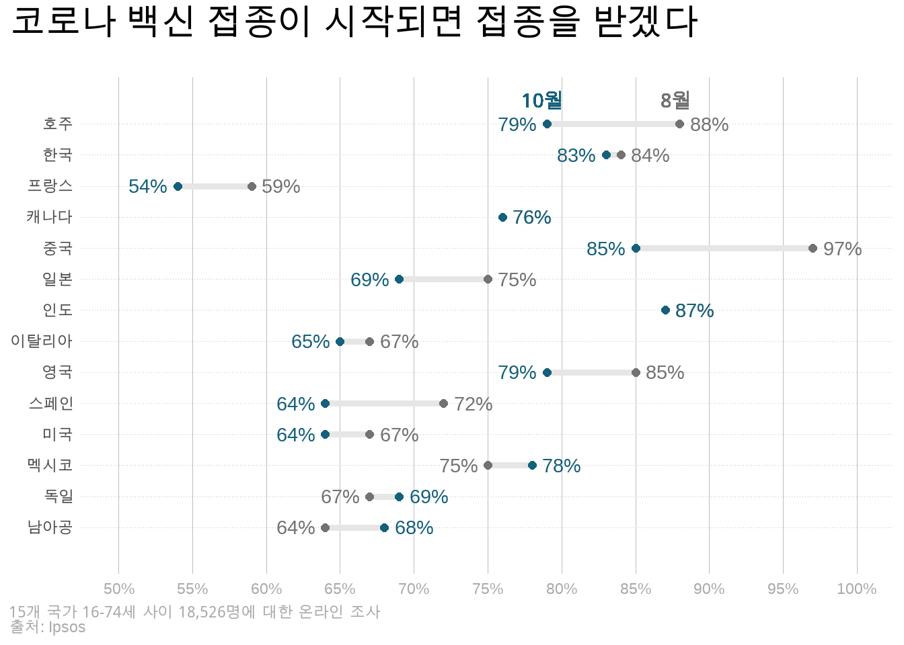

`summarise()` has grouped output by 'school_state'. You can override using the
`.groups` argument.
# A tibble: 455 x 3
# Groups: school_state [52]
school_state year avg_size
<chr> <dbl> <dbl>
1 AK 2007 380.
2 AK 2008 414.
3 AK 2009 412.
4 AK 2010 419.
5 AK 2011 442.
6 AK 2012 462.
7 AK 2013 577.
8 AK 2014 522.
9 AL 2003 339.
10 AL 2004 546.
# i 445 more rows
data <- data |>rename(country = X.1, august =`Total Agree - August 2020`,october =`Total Agree - October 2020`)data %>%pivot_longer(!country, names_to="month", values_to="agree") |>filter(country !="Total") |># 한국을 다른 색상으로 표시하기 위한 변수mutate(highlight =ifelse(country=="South Korea", TRUE, FALSE)) |>ggplot(aes(x=month, y=agree, color=highlight)) +# 색상 범례(legend) 삭제geom_point(show.legend=FALSE) +# 색상 범례(legend) 삭제geom_line(aes(group=country, size=highlight), show.legend =FALSE) +# 가로-세로 비율 조정coord_fixed(ratio=0.03) +labs(x="",y="백신 투약 의사 비율",title="<span style='color: blue'>한국</span>의 백신 투약 의사는<br>오히려 상승") +scale_color_manual(breaks=c(TRUE, FALSE),values=c("blue", "grey")) +scale_size_manual(breaks=c(TRUE, FALSE),values=c(1, 0.5)) +scale_x_discrete(expand=c(0,0.1), breaks=c("august", "october"),labels=c("8월", "10월")) +theme(panel.background =element_rect(fill="white"),axis.title.y =element_text(size=15),# ggtext 사용plot.title =element_markdown(size=18, color="grey"),plot.margin =unit(c(1,1,1,1), "cm"),plot.title.position="plot")

data %>%# 나라 이름을 한글로 변환mutate(country =case_when(country=="India"~"인도", country=="China"~"중국", country=="South Korea"~"한국", country=="Barzil"~"브라질", country=="Australia"~"호주", country=="United Kingdom"~"영국", country=="Mexico"~"멕시코", country=="Canada"~"캐나다", country=="Germany"~"독일", country=="Japan"~"일본", country=="South Africa"~"남아공", country=="Italy"~"이탈리아", country=="Spain"~"스페인", country=="United States"~"미국", country=="France"~"프랑스")) |>pivot_longer(!country, names_to="month", values_to="agree") |>filter(country !="Total") |>group_by(country) %>%# 그래프상 수치 표현을 위한 위치 지정 mutate(increase =ifelse(agree ==max(agree), TRUE, FALSE),bump =ifelse(increase, agree +2, agree -2)) |>ggplot(aes(x=agree, y=country, color=month)) +geom_line(aes(group=country), size=1.75, color="#e6e6e6", show.legend =FALSE) +geom_point(size=2, show.legend =FALSE) +# glue를 이용해 수치 뒤에 %를 삽입geom_text(aes(label=glue("{agree}%"), x=bump), show.legend=FALSE) +scale_color_manual(name=NULL,breaks=c("august", "october"),values=c("#727272", "#15607a")) +scale_x_continuous(limits=c(50, 100),breaks=seq(50, 100, by=5),labels=glue("{seq(50, 100, 5)}%")) +# 세로 여백을 확보scale_y_discrete(expand=c(0, 1.5)) +labs(x=NULL, y=NULL,title="코로나 백신 접종이 시작되면 접종을 받겠다",caption="<i>15개 국가 16-74세 사이 18,526명에 대한 온라인 조사</i><br>출처: Ipsos") +theme(plot.title.position ="plot",plot.title =element_text(face="bold", margin=margin(b=20), size=20),# ggtext이용해 HTML 문법 사용함 주의plot.caption =element_markdown(hjust=0, color="darkgray"),plot.caption.position ="plot",panel.background =element_blank(),axis.ticks =element_blank(),axis.text.x =element_text(color="darkgray"),panel.grid.major.x =element_line(color="gray", size=0.1),panel.grid.major.y =element_line(color="gray", size=0.1, linetype="dotted")) +# 적절한 위치에 '8월', '10월' 표시geom_richtext(x=79, y=14.7, label="<span style='color:#15607a'> 10월 </span>", fill =NA, label.color =NA, size=4, show.legend =FALSE) +geom_richtext(x=88, y=14.7, label="<span style='color:#727272'> 8월 </span>", fill =NA, label.color =NA, size=4, show.legend =FALSE)

14.5 API와 지도를 이용한 공간정보 활용
getApt <-function(cd, ymd){ res <-GET(url="http://openapi.molit.go.kr:8081/OpenAPI_ToolInstallPackage/service/rest/RTMSOBJSvc/getRTMSDataSvcAptTrade",query=list(LAWD_CD=cd,DEAL_YMD=ymd,serviceKey="LGvIXqsO1eCAKjgMBQWd5QYDOJ77cd4Tq/ea2CQUTUuisLvxlxaGm0YTp4f+89FfhplvwiQIe0cngpybTkdDHQ==")) dtJSON <- httr::content(res, as ="text", encoding="UTF-8") data <-fromJSON(dtJSON) df <- data$response$body$items$itemreturn(df)}
datalist <-list() # 데이터를 차례차례 입력할 빈 리스트 생성counter <-1# 리스트 안의 위치를 지정해주기 위한 카운터for (cd in cds){for (ymd in ymds) {#dt <- getApt(cd=cd, ymd=ymd)#print(dt) datalist[[counter]] <-getApt(cd=cd, ymd=ymd) counter <- counter +1 }}dtApt <-bind_rows(datalist)
Rows: 18970 Columns: 16
-- Column specification --------------------------------------------------------
Delimiter: ","
chr (7): 거래유형, 법정동, 아파트, 중개사소재지, 지번, 해제사유발생일, 해제여부
dbl (7): 건축년도, 년, 월, 일, 전용면적, 지역코드, 층
num (1): 거래금액
lgl (1): 등기일자
i Use `spec()` to retrieve the full column specification for this data.
i Specify the column types or set `show_col_types = FALSE` to quiet this message.
rgeos version: 0.6-4, (SVN revision 699)
GEOS runtime version: 3.10.2-CAPI-1.16.0
Please note that rgeos will be retired during October 2023,
plan transition to sf or terra functions using GEOS at your earliest convenience.
See https://r-spatial.org/r/2023/05/15/evolution4.html for details.
GEOS using OverlayNG
Linking to sp version: 1.6-0
Polygon checking: TRUE
daegu <- daegu %>%mutate(district =case_when(id =="남구 | 南區"~"남구", id =="달서구 | 達西區"~"달서구", id =="달성군 | 達城郡"~"달성군", id =="동구 | 東區"~"동구", id =="북구 | 北區"~"북구", id =="서구 | 西區"~"서구", id =="수성구 | 壽城區"~"수성구", id =="중구| 中區"~"중구"))growth <- aggApt %>%group_by(district) %>%summarise(growth = (last(avgP) -first(avgP)) /first(avgP) *100)
daegu %>%left_join(growth, by="district") %>%ggplot() +geom_polygon(aes(x=long, y=lat, group=group, fill=growth), color="black") +labs(title="대구 연평균 아파트 가격 상승폭") +theme_void() +theme(legend.position ="bottom", plot.title =element_text(size=18, face="bold.italic", hjust=0.5)) +scale_fill_continuous(name="연간 가격 성장률(%)") +scale_fill_gradient2()
Scale for fill is already present.
Adding another scale for fill, which will replace the existing scale.